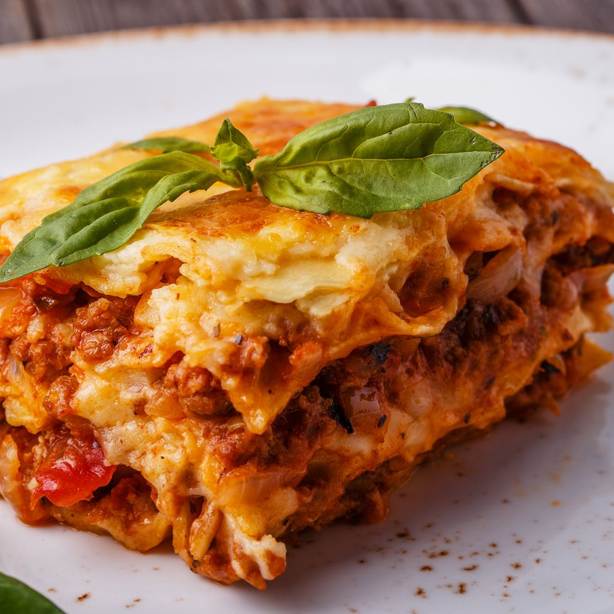

Lasagnes

Description
Les lasagnes (lasagna, en italien) sont à la fois des pâtes alimentaires
en forme de feuilles rectangulaires, ainsi qu'une recette de cuisine
italienne à base de couches alternées de pâtes lasagnes, parmesan,
mozzarella, ou ricotta, et de sauce bolognaise ou sauce béchamel, gratiné
au four.
Originaires du centre-sud italien, elles sont déclinées sous de multiples
variantes dans le monde (légume, épinard, aubergine, pesto, viande,
poisson, fruits de mer, ou végétariennes...).
- béchamel
- pâtes à lasagnes
- sauce bolognaise
- oignon
- gruyère râpé
- viandes hachée
-
Couper l'oignon en petits morceaux et faire revenir dans de l'huile
d'olive.
-
Quand les oignons ont bien bruni, y ajouter les 350g de steak haché.
- Faire cuire à feu moyen puis ajouter la sauce bolognaise.
- Préparez la béchamel. Faire fondre le beurre à feu vif.
-
Une fois fondu, rajouter les deux cuillères à soupe de farine puis
remuer avec un fouet à feu moyen.
-
Quand le mélange est homogène (très rapide), rajouter progressivement le
lait sans arrêter de fouetter pour éviter les grumeaux.
- Continuer de remuer jusqu'à ce que la béchamel s'épaississe.
- Mélanger la sauce bolognaise faite précédemment avec la béchamel.
-
Puis dans un plat à gratin, verser une couche de cette préparation puis
recouvrir de pâte à lasagne. Refaire la même chose jusqu'à épuisement de
la sauce (environ 2 fois).
-
La dernière couche doit être une couche de sauce. Ajouter le gruyère
râpé et faire cuire envrion 45 min à 180° (th.6)
-
Pour savoir si les lasagnes sont cuites, piquer avec un couteau, les
pâtes à lasagne doivent être fondantes, donc le couteau doit s'enfoncer
sans problème.